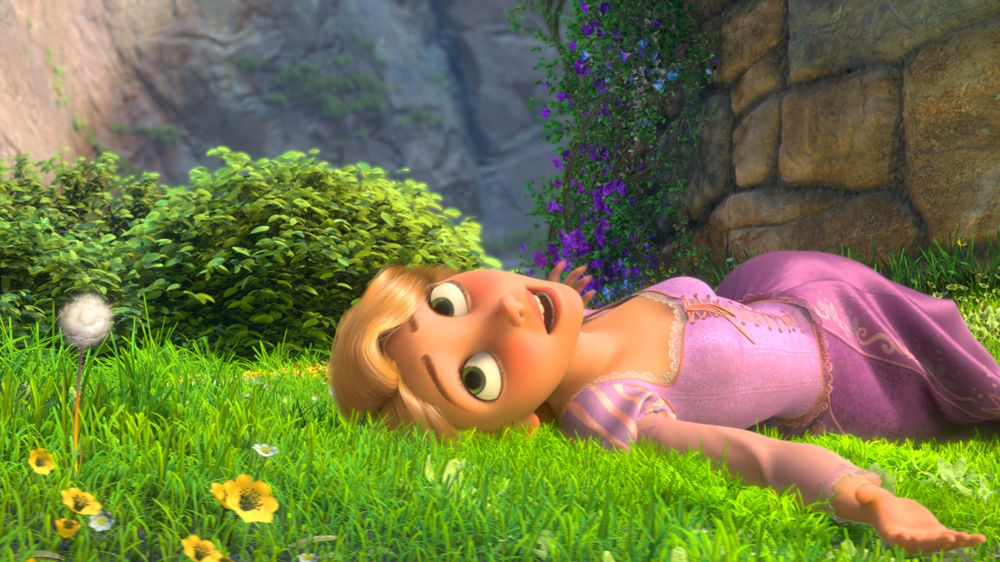

Discover UMD
Why I Chose the University of Minnesota Duluth
I chose the University of Minnesota Duluth because I want to explore opportunities in art and veterinary sciences! UMD allows me to double major in both of those things. I love Duluth and the surrounding area because it reminds me of home with the water close by and colder temperatures.
Campus Highlights
Some of my campus highlights are definitely the views from Bagley Nature Center. I love to take my watercolors up there and paint the scenery. I also love the sense of community here, as it’s very easy to get connected with like‑minded students and form meaningful connections with professors.
Experience UMD
Created by: Olivia Almodovar, Julia Balmanno, Maren Larsen, Isabelle Seepersaud, and Hadly Skaw
My UMD Experience
Enjoying the beautiful UMD campus and surrounding nature.